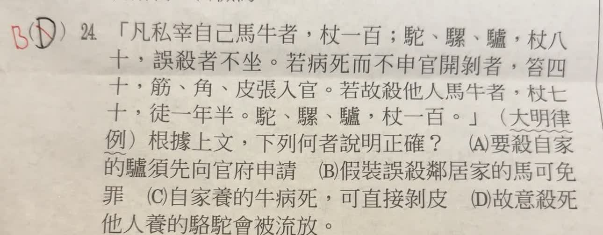

分享原卷｜第 24 題
完整原題
作答所需文章／材料
凡私宰自己馬牛者，杖一百；駝、騾、驢，杖八十，誤殺者不坐。若病死而不申官開剝者，笞四十；筋、角、皮張入官。若故殺他人馬牛者，杖七十，徒一年半。駝、騾、驢，杖一百。 （大明律例）根據上文，下列何者說明正確？
(A) 要殺自家的驢須先向官府申請
(B) 假裝誤殺鄰居家的馬可免罪
(C) 自家養的牛病死，可直接剝皮
(D) 故意殺死他人養的駱駝會被流放
先想一想，再查看答案、解說與原圖
原卷作答：原卷黑筆D，紅筆B
答案：B。「假裝」用語容易誤導，應理解為若能謊稱誤殺並騙過官府，就有可能免罪。
逐項解析
| 選項與原句 | 判讀 | 句意與判斷理由 |
|---|---|---|
| (A) 要殺自家的驢須先向官府申請 | 不選 | 節錄未明寫宰殺自家驢前的具體申請程序，不能直接補成原文明訂。 |
| (B) 假裝誤殺鄰居家的馬可免罪 | 應選 | 假裝一詞易誤導；應補足為若能謊稱誤殺並騙過官府，使官府信以為真正誤殺，就有可能免罪，並非假裝即保證免罪。 |
| (C) 自家養的牛病死，可直接剝皮 | 不選 | 病死後仍須依文中規定申官，不可逕行剝皮。 |
| (D) 故意殺死他人養的駱駝會被流放 | 不選 | 古文記為杖一百，沒有寫流放。 |
詳細說明與解題步驟
【B的「假裝」要補足語意】
本題維持答案B。不過，選項「假裝誤殺鄰居家的馬可免罪」的措辭容易誤導，應理解為：若能把行為偽裝成誤殺，並騙過官府，使官府信以為真正誤殺，就有可能依「誤殺者不坐」而免罪。
關鍵是欺瞞是否得逞、官府是否認定為誤殺；「有可能免罪」不能省略成「只要假裝就必定免罪」。原文也沒有另外訂出一條允許假裝的規定。題目與B選項保持原來，只在解說補足這層意思。
【逐項判斷】
A：節錄沒有明寫宰殺自家驢之前的申請程序，不能僅由私宰限制就把具體申請程序視為文中已明訂的資訊。
B：依上述補足語意的理解，若假裝誤殺且成功騙過官府，就有可能被當成真正誤殺而不論罪，因此本題選B。
C：文中說病死後若不申官便剝皮，仍有處罰，不能直接剝皮。
D：故意殺死他人的駱駝，節錄寫的是杖一百，沒有寫流放；杖刑、徒刑與流刑要分清。
【逐句白話】
私自宰殺自己馬牛的人，打一百杖；駝、騾、驢，打八十杖；誤殺者不論罪。
牲畜病死後，若未向官府呈報便剝皮，笞四十，筋、角、皮交官府。
故意殺他人馬牛者，杖七十，服徒刑一年半；故意殺他人的駝、騾、驢者，杖一百。
這段是在閱讀古代律例；「不坐」是不論罪，不是不能坐下。
核對註記：完整題文與四選項已依原圖核對；使用者確認維持B，僅在解說釐清假裝、騙過官府與可能免罪的條件，原題不改。
原圖（僅本題）
